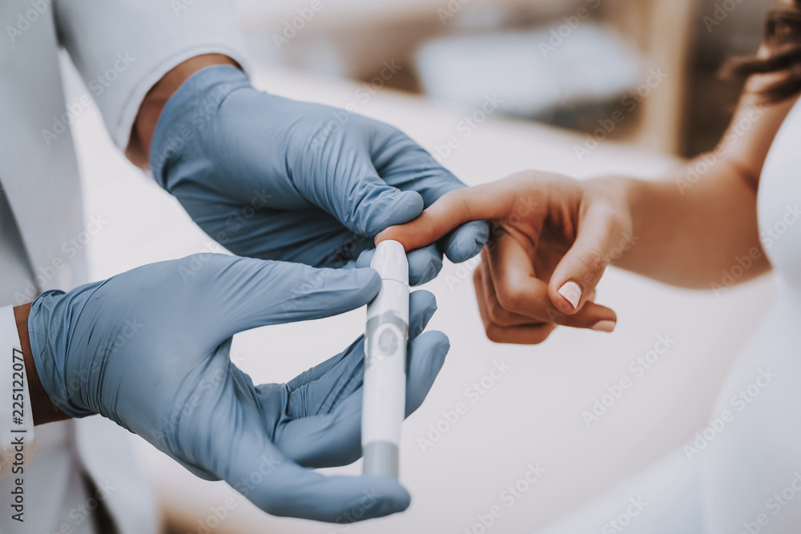
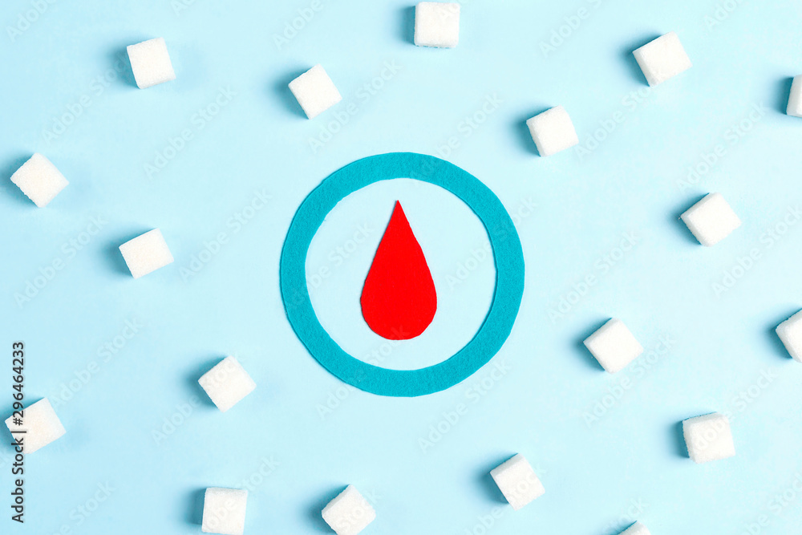
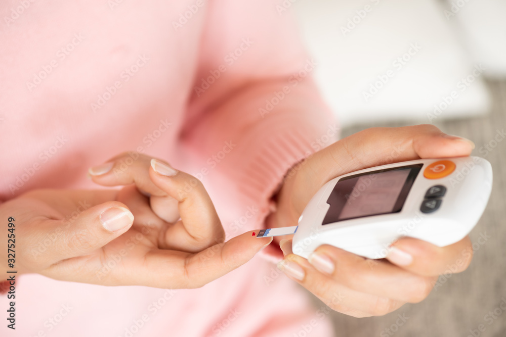

A insulina é um hormônio responsável pela redução da glicemia(taxa de glicose no sangue), ao promover a entrada de glicose nas células. Esta é também essencial no metabolismo de sacarídeos(hidrato de carbono), na síntese de proteínas e no armazenamento de lipídeos (gorduras).
QUAL É A FUNÇÃO DA INSULINA?
•A insulina atua, principalmente, permitindo que as células captem a glicose presente no sangue para diminuir a quantidade dessa substância na corrente sanguínea.
•A glicose é utilizada pela célula para a produção de energia. Caso exista pouca produção de insulina em um organismo ou ela não atua de maneira adequada, os níveis de glicose aumentam no sangue, causando problemas sérios de saúde.
Os principais tipos de insulina utilizados pelas pessoas que têm diabetes são:
•Insulina de ação ultra-rápida.
•Insulina de ação regular / NPH
•Insulina de ação ultra-lenta
INSULINA ULTRA-RÁPIDA
•Aproxima-se da quantidade apropriada do bolus naturalmente fornecido pelo corpo. Deixa a corrente sanguínea rapidamente, minimizando o risco de hipoglicemia durante várias horas após a refeição. Tem aparência límpida. Está disponível em frascos e refil para canetas.
INSULINA NPH
A descoberta da insulina, em 1921, foi um marco na história mundial, A princípio, a primeira insulina comercializada foi a Regular, que necessitava de várias aplicações ao longo do dia. Mas, poucos anos depois, foi sintetizada a insulina NPH, de origem humana, desenvolvida em laboratório, a partir da tecnologia de DNA recombinante. Além disso, a NPH possui um tempo de ação mais prolongado em relação à Regular, diminuindo a quantidade de aplicações diárias. A NPH tem pico de ação entre 4 a 10 horas, durando até 18 horas no organismo e pode ser aplicada de uma a duas vezes por dia.

INSULINA ULTRA-LENTA
Existem subdivisões que se ramificam a partir da insulina lenta (de longa ação) e a ultralenta (de ação ultralonga). A principal diferença entre a insulina de ação longa em relação ao de ação rápida é que elas não têm picos de ação terapêutica.
Outro nome para esse remédio é insulina basal, pois age durante o dia todo no organismo com a finalidade de manter estável o nível de glicose na corrente sanguínea.
Como aplicar corretamente a insulina
A velocidade com que a insulina é absorvida pelo organismo segue a seguinte ordem:
•É mais rápida no abdômen
•Um pouco mais lenta nos braçosbr
•Mais lenta ainda nas pernas
•Mais lenta nas nádegas (local inutilizado atualmente)
Porque eu devo fazer rodizio dos locais de aplicação de insulina?
•Repetidas aplicações de insulina no mesmo local pode levar a formação de calos.
•Os calos impedem que absorção da insulina aconteça de forma adequada, o que pode levar ao descontrole da glicose.
•Recomenda-se evitar o mesmo ponto de aplicação durante dias, tempo necessário para cicatrizar e prevenir calos.
•Não deve-se aplicar insulina em áreas com calos até o tecido alterado voltar ao normal, que pode levar meses ou anos.

DIABETES MELLITUS
Diabetes é uma doença relativamente comum que se caracteriza pela pouca ou nenhuma produção da insulina ou ainda pela ação ineficiente desse hormônio.
•Altas taxas de glicemia (açúcar) no sangue (hiperglicemia).
DIABETES TIPO 1
•Produz pouca ou nenhuma insulina;
•Predisposição genética.
DIABETES TIPO 2
•Resistência à ação da insulina;
•Costuma ser assintomática.
DIFERENÇA ENTRE AS DIABETES 1 E 2
•A diferença do diabetes tipo 1 para o diabetes tipo 2 está no fato de que, no primeiro caso, ocorre redução ou falta de produção de insulina; já no segundo o organismo desenvolve uma resistência à ação desse hormônio.
PÉ DIABÉTICO E SEUS SINTOMAS
São feridas que podem ocorrer no pé de pessoas do diabetes e tem uma complicada cicatrização devido aos níveis elevados de açúcar no sangue e/ou circulação sanguínea deficiente.
•formigamento;
•perda da sencibilidade local;
•dores;
•queimação nos pés e nas pernas;
•sensação de agulhadas;
•dormencia, alé de fraqueza nas pernas.